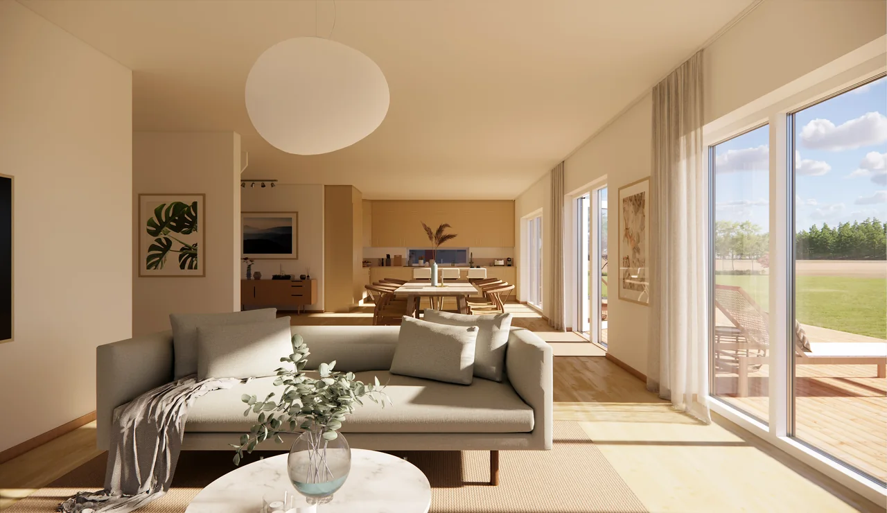

När huset behöver växa
En tillbyggnad ska möta både dina nya behov och huset som redan finns. Josés guide går igenom frågor att börja med.
Läs guiden på paredes.seLäs vidare i Josés egna guider om hus, planlösningar och byggprojekt. Artiklarna öppnas på Studio Paredes befintliga webbplats.
En tillbyggnad ska möta både dina nya behov och huset som redan finns. Josés guide går igenom frågor att börja med.
Läs guiden på paredes.se
Rummens samband påverkar mer än kvadratmetrarna. Läs om hur flöden, dagsljus och vardagens behov kan forma ett hem.
Läs guiden på paredes.se
Planerar du en mindre byggnad eller en förändring på tomten? Här finns en introduktion till ritningar och bygglovsunderlag.
Läs guiden på paredes.seDu behöver inte ha alla svar. Det här kan vara bra att samla inför det första samtalet.
Adress eller fastighetsbeteckning, fotografier och befintliga ritningar om du har dem.
Vad fungerar bra i dag, vad saknas och vad hoppas du att projektet ska göra möjligt?
Dina tankar om budget och tid. De hjälper oss att välja ett rimligt nästa steg.
Ett hus att landa i. Ett extra rum. En idé som behöver en första skiss. Berätta vad du tänker, så börjar vi där.